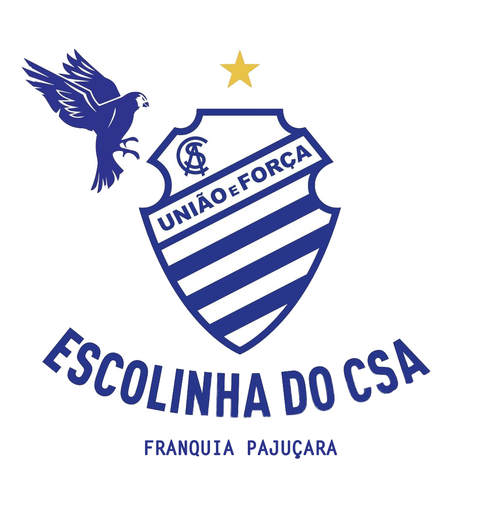

Escolinha do CSA - Franquia Pajuçara
Sobre
A Escolinha do CSA – Franquia Pajuçara é um projeto apoiado pelo Centro Sportivo Alagoano
– CSA o que garante ao aluno o recebimento da filosofia do clube e faz parte de um programa
de reestruturação das categorias de base, visando possibilitar a descoberta de novos talentos,
oferecendo uma metodologia de trabalho que adota conceitos modernos para o processo de
ensino-aprendizagem e treinamento.
Tem em sua essência a preocupação com a formação dos nossos alunos, aplicando um
treinamento adequado e gradativo que respeita a faixa etária e a aptidão do aluno, atendendo
suas necessidades e expectativas.
A Escolinha do CSA – Franquia Pajuçara está aberta a meninos e meninas de 04 aos 15 anos
que queiram desenvolver suas habilidades e que sonhem em fazer parte do Maior Clube de
Alagoas.

A Escolinha
A Escolinha do CSA – Franquia Pajuçara é uma escola de futebol que traz em sua filosofia de
trabalho a metodologia de formação de jogadores (atletas). Além de investir na formação
desportiva, ela busca cooperar com a família através do trabalho de educação e formação
integral dos seus alunos, introduzindo valores e ensinando princípios que venham contribuir
para o desenvolvimento e formação do caráter de cada um deles.
Sempre criando um clima adequado de entusiasmo e motivação para ajudar no processo de
ensino-aprendizagem dos alunos e contando com uma metodologia própria para a elaboração
das nossas aulas, buscamos um progresso constante para que o aluno consiga desenvolver e
manifestar todo o seu potencial físico, técnico, tático e humano.
Visão
Ser uma escola de futebol referência na iniciação desportiva no estado, tendo como foco o
aluno, seu bem-estar e a sua motivação para a prática do futebol.
Missão
Construir uma proposta de ensino que privilegie o aluno e suas habilidades individuais,
independente do nível técnico, Contribuindo na formação de excelentes atletas e cidadão
conscientes por meio da prática do futebol.
Valores
Companheirismo; Cooperação; Honestidade; Mérito; Solidariedade; Disciplina; Ética; Alegria;
Respeito.
Objetivos
Geral: Ser uma escola de futebol que proporciona o aperfeiçoamento dos nossos alunos
baseado em um trabalho planificado, organizado e metodológico.
Específicos:
- Fazer do aluno parte e protagonista de tudo que o futebol pode oferecer;
- Desenvolver o lado psicomotor através de treinamentos específicos;
- Formar cidadãos e transmitir valores;
- Contribuir para a criação de vínculos de amizade e relacionamento entre alunos, pais e
instituição.
Metodologia
A metodologia de treinamento da Escolinha do CSA – Franquia Pajuçara foi construída
seguindo nossa filosofia de formação de atletas e educação desportiva, contribuindo com a
criança no aspecto social, ético e desportivo.
Levando em consideração a faixa etária e ponderando os limites de cada aluno, direcionamos
os treinos sem pular etapa e sem ter excessos.
O programa de treinamento traz a abordagem dos jogos reduzidos e condicionados para o
futebol, com ênfase para as capacidades técnicas, táticas físicas e psicológicas, respeitando as
características de cada categoria.
Através de um conteúdo dinâmico, flexível e recreativo, o aluno poderá desenvolver sua
capacidade motora, cognitiva e técnica, fazendo com que o treino se torne especializado e
produtivo.